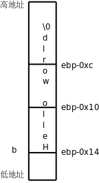
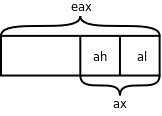
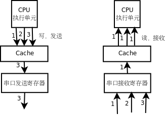

第 19 章 汇编与 C 之间的关系
上一章我们学习了汇编的一些基础知识，本章我们进一步研究 C 程序编译之后的汇编是什么样的，C 语言的各种语法分别对应什么样的指令，从而更深入地理解 C 语言。gcc 还提供了一种扩展语法可以在 C 程序中内嵌汇编指令，这在内核代码中很常见，本章也会简要介绍这种用法。
1. 函数调用
我们用下面的代码来研究函数调用的过程。
例 19.1. 研究函数的调用过程
int bar(int c, int d)
{
int e = c + d;
return e;
}
int foo(int a, int b)
{
return bar(a, b);
}
int main(void)
{
foo(2, 3);
return 0;
}
如果在编译时加上 -g 选项（在第 10 章「gdb」讲过 -g 选项），那么用 objdump 反汇编时可以把 C 代码和汇编代码穿插起来显示，这样 C 代码和汇编代码的对应关系看得更清楚。反汇编的结果很长，以下只列出我们关心的部分。
$ gcc main.c -g
$ objdump -dS a.out
...
08048394 <bar>:
int bar(int c, int d)
{
8048394: 55 push %ebp
8048395: 89 e5 mov %esp,%ebp
8048397: 83 ec 10 sub $0x10,%esp
int e = c + d;
804839a: 8b 55 0c mov 0xc(%ebp),%edx
804839d: 8b 45 08 mov 0x8(%ebp),%eax
80483a0: 01 d0 add %edx,%eax
80483a2: 89 45 fc mov %eax,-0x4(%ebp)
return e;
80483a5: 8b 45 fc mov -0x4(%ebp),%eax
}
80483a8: c9 leave
80483a9: c3 ret
080483aa <foo>:
int foo(int a, int b)
{
80483aa: 55 push %ebp
80483ab: 89 e5 mov %esp,%ebp
80483ad: 83 ec 08 sub $0x8,%esp
return bar(a, b);
80483b0: 8b 45 0c mov 0xc(%ebp),%eax
80483b3: 89 44 24 04 mov %eax,0x4(%esp)
80483b7: 8b 45 08 mov 0x8(%ebp),%eax
80483ba: 89 04 24 mov %eax,(%esp)
80483bd: e8 d2 ff ff ff call 8048394 <bar>
}
80483c2: c9 leave
80483c3: c3 ret
080483c4 <main>:
int main(void)
{
80483c4: 8d 4c 24 04 lea 0x4(%esp),%ecx
80483c8: 83 e4 f0 and $0xfffffff0,%esp
80483cb: ff 71 fc pushl -0x4(%ecx)
80483ce: 55 push %ebp
80483cf: 89 e5 mov %esp,%ebp
80483d1: 51 push %ecx
80483d2: 83 ec 08 sub $0x8,%esp
foo(2, 3);
80483d5: c7 44 24 04 03 00 00 movl $0x3,0x4(%esp)
80483dc: 00
80483dd: c7 04 24 02 00 00 00 movl $0x2,(%esp)
80483e4: e8 c1 ff ff ff call 80483aa <foo>
return 0;
80483e9: b8 00 00 00 00 mov $0x0,%eax
}
80483ee: 83 c4 08 add $0x8,%esp
80483f1: 59 pop %ecx
80483f2: 5d pop %ebp
80483f3: 8d 61 fc lea -0x4(%ecx),%esp
80483f6: c3 ret
...
要查看编译后的汇编代码，其实还有一种办法是 gcc -S main.c，这样只生成汇编代码 main.s，而不生成二进制的目标文件。
整个程序的执行过程是 main 调用 foo，foo 调用 bar，我们用 gdb 跟踪程序的执行，直到 bar 函数中的 int e = c + d; 语句执行完毕准备返回时，这时在 gdb 中打印函数栈帧。
(gdb) start
...
main () at main.c:14
14 foo(2, 3);
(gdb) s
foo (a=2, b=3) at main.c:9
9 return bar(a, b);
(gdb) s
bar (c=2, d=3) at main.c:3
3 int e = c + d;
(gdb) disassemble
Dump of assembler code for function bar:
0x08048394 <bar+0>: push %ebp
0x08048395 <bar+1>: mov %esp,%ebp
0x08048397 <bar+3>: sub $0x10,%esp
0x0804839a <bar+6>: mov 0xc(%ebp),%edx
0x0804839d <bar+9>: mov 0x8(%ebp),%eax
0x080483a0 <bar+12>: add %edx,%eax
0x080483a2 <bar+14>: mov %eax,-0x4(%ebp)
0x080483a5 <bar+17>: mov -0x4(%ebp),%eax
0x080483a8 <bar+20>: leave
0x080483a9 <bar+21>: ret
End of assembler dump.
(gdb) si
0x0804839d 3 int e = c + d;
(gdb) si
0x080483a0 3 int e = c + d;
(gdb) si
0x080483a2 3 int e = c + d;
(gdb) si
4 return e;
(gdb) si
5 }
(gdb) bt
#0 bar (c=2, d=3) at main.c:5
#1 0x080483c2 in foo (a=2, b=3) at main.c:9
#2 0x080483e9 in main () at main.c:14
(gdb) info registers
eax 0x5 5
ecx 0xbff1c440 -1074674624
edx 0x3 3
ebx 0xb7fe6ff4 -1208061964
esp 0xbff1c3f4 0xbff1c3f4
ebp 0xbff1c404 0xbff1c404
esi 0x8048410 134513680
edi 0x80482e0 134513376
eip 0x80483a8 0x80483a8 <bar+20>
eflags 0x200206 [ PF IF ID ]
cs 0x73 115
ss 0x7b 123
ds 0x7b 123
es 0x7b 123
fs 0x0 0
gs 0x33 51
(gdb) x/20 $esp
0xbff1c3f4: 0x00000000 0xbff1c6f7 0xb7efbdae 0x00000005
0xbff1c404: 0xbff1c414 0x080483c2 0x00000002 0x00000003
0xbff1c414: 0xbff1c428 0x080483e9 0x00000002 0x00000003
0xbff1c424: 0xbff1c440 0xbff1c498 0xb7ea3685 0x08048410
0xbff1c434: 0x080482e0 0xbff1c498 0xb7ea3685 0x00000001
(gdb)
这里又用到几个新的 gdb 命令。disassemble 可以反汇编当前函数或者指定的函数，单独用 disassemble 命令是反汇编当前函数，如果 disassemble 命令后面跟函数名或地址则反汇编指定的函数。以前我们讲过 step 命令可以一行代码一行代码地单步调试，而这里用到的 si 命令可以一条指令一条指令地单步调试。info registers 可以显示所有寄存器的当前值。在 gdb 中表示寄存器名时前面要加个 $，例如 p $esp 可以打印 esp 寄存器的值，在上例中 esp 寄存器的值是 0xbff1c3f4，所以 x/20 $esp 命令查看内存中从 0xbff1c3f4 地址开始的 20 个 32 位数。在执行程序时，操作系统为进程分配一块栈空间来保存函数栈帧，esp 寄存器总是指向栈顶，在 x86 平台上这个栈是从高地址向低地址增长的，我们知道每次调用一个函数都要分配一个栈帧来保存参数和局部变量，现在我们详细分析这些数据在栈空间的布局，根据 gdb 的输出结果图示如下[29]：
[29] Linux 内核为每个新进程指定的栈空间的起始地址都会有些不同，所以每次运行这个程序得到的地址都不一样，但通常都是
0xbf??????这样一个地址。
图 19.1. 函数栈帧

图中每个小方格表示 4 个字节的内存单元，例如 b: 3 这个小方格占的内存地址是 0xbf822d20 ~ 0xbf822d23，我把地址写在每个小方格的下边界线上，是为了强调该地址是内存单元的起始地址。我们从 main 函数的这里开始看起：
foo(2, 3);
80483d5: c7 44 24 04 03 00 00 movl $0x3,0x4(%esp)
80483dc: 00
80483dd: c7 04 24 02 00 00 00 movl $0x2,(%esp)
80483e4: e8 c1 ff ff ff call 80483aa <foo>
return 0;
80483e9: b8 00 00 00 00 mov $0x0,%eax
要调用函数 foo 先要把参数准备好，第二个参数保存在 esp+4 指向的内存位置，第一个参数保存在 esp 指向的内存位置，可见参数是从右向左依次压栈的。然后执行 call 指令，这个指令有两个作用：
foo函数调用完之后要返回到call的下一条指令继续执行，所以把call的下一条指令的地址 0x80483e9 压栈，同时把esp的值减 4，esp的值现在是 0xbf822d18。- 修改程序计数器
eip，跳转到foo函数的开头执行。
现在看 foo 函数的汇编代码：
int foo(int a, int b)
{
80483aa: 55 push %ebp
80483ab: 89 e5 mov %esp,%ebp
80483ad: 83 ec 08 sub $0x8,%esp
push %ebp 指令把 ebp 寄存器的值压栈，同时把 esp 的值减 4。esp 的值现在是 0xbf822d14，下一条指令把这个值传送给 ebp 寄存器。这两条指令合起来是把原来 ebp 的值保存在栈上，然后又给 ebp 赋了新值。在每个函数的栈帧中，ebp 指向栈底，而 esp 指向栈顶，在函数执行过程中 esp 随着压栈和出栈操作随时变化，而 ebp 是不动的，函数的参数和局部变量都是通过 ebp 的值加上一个偏移量来访问，例如 foo 函数的参数 a 和 b 分别通过 ebp+8 和 ebp+12 来访问。所以下面的指令把参数 a 和 b 再次压栈，为调用 bar 函数做准备，然后把返回地址压栈，调用 bar 函数：
return bar(a, b);
80483b0: 8b 45 0c mov 0xc(%ebp),%eax
80483b3: 89 44 24 04 mov %eax,0x4(%esp)
80483b7: 8b 45 08 mov 0x8(%ebp),%eax
80483ba: 89 04 24 mov %eax,(%esp)
80483bd: e8 d2 ff ff ff call 8048394 <bar>
现在看 bar 函数的指令：
int bar(int c, int d)
{
8048394: 55 push %ebp
8048395: 89 e5 mov %esp,%ebp
8048397: 83 ec 10 sub $0x10,%esp
int e = c + d;
804839a: 8b 55 0c mov 0xc(%ebp),%edx
804839d: 8b 45 08 mov 0x8(%ebp),%eax
80483a0: 01 d0 add %edx,%eax
80483a2: 89 45 fc mov %eax,-0x4(%ebp)
这次又把 foo 函数的 ebp 压栈保存，然后给 ebp 赋了新值，指向 bar 函数栈帧的栈底，通过 ebp+8 和 ebp+12 分别可以访问参数 c 和 d。bar 函数还有一个局部变量 e，可以通过 ebp-4 来访问。所以后面几条指令的意思是把参数 c 和 d 取出来存在寄存器中做加法，计算结果保存在 eax 寄存器中，再把 eax 寄存器存回局部变量 e 的内存单元。
在 gdb 中可以用 bt 命令和 frame 命令查看每层栈帧上的参数和局部变量，现在可以解释它的工作原理了：如果我当前在 bar 函数中，我可以通过 ebp 找到 bar 函数的参数和局部变量，也可以找到 foo 函数的 ebp 保存在栈上的值，有了 foo 函数的 ebp，又可以找到它的参数和局部变量，也可以找到 main 函数的 ebp 保存在栈上的值，因此各层函数栈帧通过保存在栈上的 ebp 的值串起来了。
现在看 bar 函数的返回指令：
return e;
80483a5: 8b 45 fc mov -0x4(%ebp),%eax
}
80483a8: c9 leave
80483a9: c3 ret
bar 函数有一个 int 型的返回值，这个返回值是通过 eax 寄存器传递的，所以首先把 e 的值读到 eax 寄存器中。然后执行 leave 指令，这个指令是函数开头的 push %ebp 和 mov %esp,%ebp 的逆操作：
- 把
ebp的值赋给esp，现在esp的值是 0xbf822d04。 - 现在
esp所指向的栈顶保存着foo函数栈帧的ebp，把这个值恢复给ebp，同时esp增加 4，esp的值变成 0xbf822d08。
最后是 ret 指令，它是 call 指令的逆操作：
- 现在
esp所指向的栈顶保存着返回地址，把这个值恢复给eip，同时esp增加 4，esp的值变成 0xbf822d0c。 - 修改了程序计数器
eip，因此跳转到返回地址 0x80483c2 继续执行。
地址 0x80483c2 处是 foo 函数的返回指令：
80483c2: c9 leave
80483c3: c3 ret
重复同样的过程，又返回到了 main 函数。注意函数调用和返回过程中的这些规则：
- 参数压栈传递，并且是从右向左依次压栈。
ebp总是指向当前栈帧的栈底。- 返回值通过
eax寄存器传递。
这些规则并不是体系结构所强加的，ebp 寄存器并不是必须这么用，函数的参数和返回值也不是必须这么传，只是操作系统和编译器选择了以这样的方式实现C代码中的函数调用，这称为 Calling Convention，Calling Convention 是操作系统二进制接口规范（ABI，Application Binary Interface）的一部分。
习题
-
在第 3 章「简单函数」第 2 节「自定义函数」讲过，Old Style C 风格的函数声明可以不指定参数个数和类型，这样编译器不会对函数调用做检查，那么如果调用时的参数类型不对或者参数个数不对会怎么样呢？比如把本节的例子改成这样：
int foo(); int bar(); int main(void) { foo(2, 3, 4); return 0; } int foo(int a, int b) { return bar(a); } int bar(int c, int d) { int e = c + d; return e; }main函数调用foo时多传了一个参数，那么参数a和b分别取什么值？多的参数怎么办？foo调用bar时少传了一个参数，那么参数d的值从哪里取得？请读者利用反汇编和gdb自己分析一下。我们再看一个参数类型不符的例子：#include <stdio.h> int main(void) { void foo(); char c = 60; foo(c); return 0; } void foo(double d) { printf("%f\n", d); }打印结果是多少？如果把声明
void foo();改成void foo(double);，打印结果又是多少？
2. main 函数和启动例程
为什么汇编程序的入口是 _start，而 C 程序的入口是 main 函数呢？本节就来解释这个问题。在讲上章例 18.1 「最简单的汇编程序」时，我们的汇编和链接步骤是：
$ as hello.s -o hello.o
$ ld hello.o -o hello
以前我们常用 gcc main.c -o main 命令编译一个程序，其实也可以分三步做，第一步生成汇编代码，第二步生成目标文件，第三步生成可执行文件：
$ gcc -S main.c
$ gcc -c main.s
$ gcc main.o
-S 选项生成汇编代码，-c 选项生成目标文件，此外在第 8 章「数组」第 2 节「数组应用实例：统计随机数」还讲过 -E 选项只做预处理而不编译，如果不加这些选项则 gcc 执行完整的编译步骤，直到最后链接生成可执行文件为止。如下图所示。
图 19.2. gcc 命令的选项

这些选项都可以和 -o 搭配使用，给输出的文件重新命名而不使用 gcc 默认的文件名（xxx.c、xxx.s、xxx.o 和 a.out），例如 gcc main.o -o main 将 main.o 链接成可执行文件 main。先前由汇编代码上章例 18.1 「最简单的汇编程序」生成的目标文件 hello.o 我们是用 ld 来链接的，可不可以用 gcc 链接呢？试试看。
$ gcc hello.o -o hello
hello.o: In function `_start':
(.text+0x0): multiple definition of `_start'
/usr/lib/gcc/i486-linux-gnu/4.3.2/../../../../lib/crt1.o:(.text+0x0): first defined here
/usr/lib/gcc/i486-linux-gnu/4.3.2/../../../../lib/crt1.o: In function `_start':
(.text+0x18): undefined reference to `main'
collect2: ld returned 1 exit status
提示两个错误：一是 _start 有多个定义，一个定义是由我们的汇编代码提供的，另一个定义来自 /usr/lib/crt1.o；二是 crt1.o 的 _start 函数要调用 main 函数，而我们的汇编代码中没有提供 main 函数的定义。从最后一行还可以看出这些错误提示是由 ld 给出的。由此可见，如果我们用 gcc 做链接，gcc 其实是调用 ld 将目标文件 crt1.o 和我们的 hello.o 链接在一起。crt1.o 里面已经提供了 _start 入口点，我们的汇编程序中再实现一个 _start 就是多重定义了，链接器不知道该用哪个，只好报错。另外，crt1.o 提供的 _start 需要调用 main 函数，而我们的汇编程序中没有实现 main 函数，所以报错。
如果目标文件是由 C 代码编译生成的，用 gcc 做链接就没错了，整个程序的入口点是 crt1.o 中提供的 _start，它首先做一些初始化工作（以下称为启动例程，Startup Routine），然后调用 C 代码中提供的 main 函数。所以，以前我们说 main 函数是程序的入口点其实不准确，_start 才是真正的入口点，而 main 函数是被 _start 调用的。
我们继续研究上一节的本章例 19.1 「研究函数的调用过程」。如果分两步编译，第二步 gcc main.o -o main 其实是调用 ld 做链接的，相当于这样的命令：
$ ld /usr/lib/crt1.o /usr/lib/crti.o main.o -o main -lc -dynamic-linker /lib/ld-linux.so.2
也就是说，除了 crt1.o 之外其实还有 crti.o，这两个目标文件和我们的 main.o 链接在一起生成可执行文件 main。-lc 表示需要链接 libc 库，在第 3 章「简单函数」第 1 节「数学函数」讲过 -lc 选项是 gcc 默认的，不用写，而对于 ld 则不是默认选项，所以要写上。-dynamic-linker /lib/ld-linux.so.2 指定动态链接器是 /lib/ld-linux.so.2，稍后会解释什么是动态链接。
那么 crt1.o 和 crti.o 里面都有什么呢？我们可以用 readelf 命令查看。在这里我们只关心符号表，如果只看符号表，可以用 readelf 命令的 -s 选项，也可以用 nm 命令。
$ nm /usr/lib/crt1.o
00000000 R _IO_stdin_used
00000000 D __data_start
U __libc_csu_fini
U __libc_csu_init
U __libc_start_main
00000000 R _fp_hw
00000000 T _start
00000000 W data_start
U main
$ nm /usr/lib/crti.o
U _GLOBAL_OFFSET_TABLE_
w __gmon_start__
00000000 T _fini
00000000 T _init
U main 这一行表示 main 这个符号在 crt1.o 中用到了，但是没有定义（U 表示Undefined），因此需要别的目标文件提供一个定义并且和 crt1.o 链接在一起。具体来说，在 crt1.o 中要用到 main 这个符号所代表的地址，例如有一条指令是 push $符号 main 所代表的地址，但不知道这个地址是多少，所以在 crt1.o 中这条指令暂时写成 push $0x0，等到和 main.o 链接成可执行文件时就知道这个地址是多少了，比如是 0x80483c4，那么可执行文件 main 中的这条指令就被链接器改成了 push $0x80483c4。链接器在这里起到符号解析（Symbol Resolution）的作用，在上章第 5.2 节「可执行文件」我们看到链接器起到重定位的作用，这两种作用都是通过修改指令中的地址实现的，链接器也是一种编辑器，vi 和 emacs 编辑的是源文件，而链接器编辑的是目标文件，所以链接器也叫 Link Editor。T _start 这一行表示 _start 这个符号在 crt1.o 中提供了定义，这个符号的类型是代码（T 表示 Text）。我们从上面的输出结果中选取几个符号用图示说明它们之间的关系：
图 19.3. C 程序的链接过程

其实上面我们写的 ld 命令做了很多简化，gcc 在链接时还用到了另外几个目标文件，所以上图多画了一个框，表示组成可执行文件 main 的除了 main.o、crt1.o 和 crti.o 之外还有其它目标文件，本书不做深入讨论，用 gcc 的 -v 选项可以了解详细的编译过程：
$ gcc -v main.c -o main
Using built-in specs.
Target: i486-linux-gnu
...
/usr/lib/gcc/i486-linux-gnu/4.3.2/cc1 -quiet -v main.c -D_FORTIFY_SOURCE=2 -quiet -dumpbase main.c -mtune=generic -auxbase main -version -fstack-protector -o /tmp/ccRGDpua.s
...
as -V -Qy -o /tmp/ccidnZ1d.o /tmp/ccRGDpua.s
...
/usr/lib/gcc/i486-linux-gnu/4.3.2/collect2 --eh-frame-hdr -m elf_i386 --hash-style=both -dynamic-linker /lib/ld-linux.so.2 -o main -z relro /usr/lib/gcc/i486-linux-gnu/4.3.2/../../../../lib/crt1.o /usr/lib/gcc/i486-linux-gnu/4.3.2/../../../../lib/crti.o /usr/lib/gcc/i486-linux-gnu/4.3.2/crtbegin.o -L/usr/lib/gcc/i486-linux-gnu/4.3.2 -L/usr/lib/gcc/i486-linux-gnu/4.3.2 -L/usr/lib/gcc/i486-linux-gnu/4.3.2/../../../../lib -L/lib/../lib -L/usr/lib/../lib -L/usr/lib/gcc/i486-linux-gnu/4.3.2/../../.. /tmp/ccidnZ1d.o -lgcc --as-needed -lgcc_s --no-as-needed -lc -lgcc --as-needed -lgcc_s --no-as-needed /usr/lib/gcc/i486-linux-gnu/4.3.2/crtend.o /usr/lib/gcc/i486-linux-gnu/4.3.2/../../../../lib/crtn.o
链接生成的可执行文件 main 中包含了各目标文件所定义的符号，通过反汇编可以看到这些符号的定义：
$ objdump -d main
main: file format elf32-i386
Disassembly of section .init:
08048274 <_init>:
8048274: 55 push %ebp
8048275: 89 e5 mov %esp,%ebp
8048277: 53 push %ebx
...
Disassembly of section .text:
080482e0 <_start>:
80482e0: 31 ed xor %ebp,%ebp
80482e2: 5e pop %esi
80482e3: 89 e1 mov %esp,%ecx
...
08048394 <bar>:
8048394: 55 push %ebp
8048395: 89 e5 mov %esp,%ebp
8048397: 83 ec 10 sub $0x10,%esp
...
080483aa <foo>:
80483aa: 55 push %ebp
80483ab: 89 e5 mov %esp,%ebp
80483ad: 83 ec 08 sub $0x8,%esp
...
080483c4 <main>:
80483c4: 8d 4c 24 04 lea 0x4(%esp),%ecx
80483c8: 83 e4 f0 and $0xfffffff0,%esp
80483cb: ff 71 fc pushl -0x4(%ecx)
...
Disassembly of section .fini:
0804849c <_fini>:
804849c: 55 push %ebp
804849d: 89 e5 mov %esp,%ebp
804849f: 53 push %ebx
crt1.o 中的未定义符号 main 在 main.o 中定义了，所以链接在一起就没问题了。crt1.o 还有一个未定义符号 __libc_start_main 在其它几个目标文件中也没有定义，所以在可执行文件 main 中仍然是个未定义符号。这个符号是在 libc 中定义的，libc 并不像其它目标文件一样链接到可执行文件 main 中，而是在运行时做动态链接：
- 操作系统在加载执行
main这个程序时，首先查看它有没有需要动态链接的未定义符号。 - 如果需要做动态链接，就查看这个程序指定了哪些共享库（我们用
-lc指定了libc）以及用什么动态链接器来做动态链接（我们用-dynamic-linker /lib/ld-linux.so.2指定了动态链接器）。 - 动态链接器在共享库中查找这些符号的定义，完成链接过程。
了解了这些原理之后，现在我们来看 _start 的反汇编：
...
Disassembly of section .text:
080482e0 <_start>:
80482e0: 31 ed xor %ebp,%ebp
80482e2: 5e pop %esi
80482e3: 89 e1 mov %esp,%ecx
80482e5: 83 e4 f0 and $0xfffffff0,%esp
80482e8: 50 push %eax
80482e9: 54 push %esp
80482ea: 52 push %edx
80482eb: 68 00 84 04 08 push $0x8048400
80482f0: 68 10 84 04 08 push $0x8048410
80482f5: 51 push %ecx
80482f6: 56 push %esi
80482f7: 68 c4 83 04 08 push $0x80483c4
80482fc: e8 c3 ff ff ff call 80482c4 <__libc_start_main@plt>
...
首先将一系列参数压栈，然后调用 libc 的库函数 __libc_start_main 做初始化工作，其中最后一个压栈的参数 push $0x80483c4 是 main 函数的地址，__libc_start_main 在完成初始化工作之后会调用 main 函数。由于 __libc_start_main 需要动态链接，所以这个库函数的指令在可执行文件 main 的反汇编中肯定是找不到的，然而我们找到了这个：
Disassembly of section .plt:
...
080482c4 <__libc_start_main@plt>:
80482c4: ff 25 04 a0 04 08 jmp *0x804a004
80482ca: 68 08 00 00 00 push $0x8
80482cf: e9 d0 ff ff ff jmp 80482a4 <_init+0x30>
这三条指令位于 .plt 段而不是 .text 段，.plt 段协助完成动态链接的过程。我们将在下一章详细讲解动态链接的过程。
main 函数最标准的原型应该是 int main(int argc, char *argv[])，也就是说启动例程会传两个参数给 main 函数，这两个参数的含义我们学了指针以后再解释。我们到目前为止都把 main 函数的原型写成 int main(void)，这也是 C 标准允许的，如果你认真分析了上一节的习题，你就应该知道，多传了参数而不用是没有问题的，少传了参数却用了则会出问题。
由于 main 函数是被启动例程调用的，所以从 main 函数 return 时仍返回到启动例程中，main 函数的返回值被启动例程得到，如果将启动例程表示成等价的 C 代码（实际上启动例程一般是直接用汇编写的），则它调用 main 函数的形式是：
exit(main(argc, argv));
也就是说，启动例程得到 main 函数的返回值后，会立刻用它做参数调用 exit 函数。exit 也是 libc 中的函数，它首先做一些清理工作，然后调用上一章讲过的 _exit 系统调用终止进程，main 函数的返回值最终被传给 _exit 系统调用，成为进程的退出状态。我们也可以在 main 函数中直接调用 exit 函数终止进程而不返回到启动例程，例如：
#include <stdlib.h>
int main(void)
{
exit(4);
}
这样和 int main(void) { return 4; } 的效果是一样的。在 Shell 中运行这个程序并查看它的退出状态：
$ ./a.out
$ echo $?
4
按照惯例，退出状态为 0 表示程序执行成功，退出状态非 0 表示出错。注意，退出状态只有 8 位，而且被 Shell 解释成无符号数，如果将上面的代码改为 exit(-1); 或 return -1;，则运行结果为
$ ./a.out
$ echo $?
255
注意，如果声明一个函数的返回值类型是 int，函数中每个分支控制流程必须写 return 语句指定返回值，如果缺了 return 则返回值不确定（想想这是为什么），编译器通常是会报警告的，但如果某个分支控制流程调用了 exit 或 _exit 而不写 return，编译器是允许的，因为它都没有机会返回了，指不指定返回值也就无所谓了。使用 exit 函数需要包含头文件 stdlib.h，而使用 _exit 函数需要包含头文件 unistd.h，以后还要详细解释这两个函数。
3. 变量的存储布局
首先看下面的例子：
例 19.2. 研究变量的存储布局
#include <stdio.h>
const int A = 10;
int a = 20;
static int b = 30;
int c;
int main(void)
{
static int a = 40;
char b[] = "Hello world";
register int c = 50;
printf("Hello world %d\n", c);
return 0;
}
我们在全局作用域和 main 函数的局部作用域各定义了一些变量，并且引入一些新的关键字 const、static、register 来修饰变量，那么这些变量的存储空间是怎么分配的呢？我们编译之后用 readelf 命令看它的符号表，了解各变量的地址分布。注意在下面的清单中我把符号表按地址从低到高的顺序重新排列了，并且只截取我们关心的那几行。
$ gcc main.c -g
$ readelf -a a.out
...
68: 08048540 4 OBJECT GLOBAL DEFAULT 15 A
69: 0804a018 4 OBJECT GLOBAL DEFAULT 23 a
52: 0804a01c 4 OBJECT LOCAL DEFAULT 23 b
53: 0804a020 4 OBJECT LOCAL DEFAULT 23 a.1589
81: 0804a02c 4 OBJECT GLOBAL DEFAULT 24 c
...
变量 A 用 const 修饰，表示 A 是只读的，不可修改，它被分配的地址是 0x8048540，从 readelf 的输出可以看到这个地址位于 .rodata 段：
Section Headers:
[Nr] Name Type Addr Off Size ES Flg Lk Inf Al
...
[13] .text PROGBITS 08048360 000360 0001bc 00 AX 0 0 16
...
[15] .rodata PROGBITS 08048538 000538 00001c 00 A 0 0 4
...
[23] .data PROGBITS 0804a010 001010 000014 00 WA 0 0 4
[24] .bss NOBITS 0804a024 001024 00000c 00 WA 0 0 4
...
它在文件中的地址是 0x538 ~ 0x554，我们用 hexdump 命令看看这个段的内容：
$ hexdump -C a.out
...
00000530 5c fe ff ff 59 5b c9 c3 03 00 00 00 01 00 02 00 |\...Y[..........|
00000540 0a 00 00 00 48 65 6c 6c 6f 20 77 6f 72 6c 64 20 |....Hello world |
00000550 25 64 0a 00 00 00 00 00 00 00 00 00 00 00 00 00 |%d..............|
...
其中 0x540 地址处的 0a 00 00 00 就是变量 A。我们还看到程序中的字符串字面值 "Hello world %d\n" 分配在 .rodata 段的末尾，在第 8 章「数组」第 4 节「字符串」说过字符串字面值是只读的，相当于在全局作用域定义了一个 const 数组：
const char helloworld[] = {'H', 'e', 'l', 'l', 'o', ' ',
'w', 'o', 'r', 'l', 'd', ' ', '%', 'd', '\n', '\0'};
程序加载运行时，.rodata 段和 .text 段通常合并到一个 Segment 中，操作系统将这个 Segment 的页面只读保护起来，防止意外的改写。这一点从 readelf 的输出也可以看出来：
Section to Segment mapping:
Segment Sections...
00
01 .interp
02 .interp .note.ABI-tag .hash .gnu.hash .dynsym .dynstr .gnu.version .gnu.version_r .rel.dyn .rel.plt .init .plt .text .fini .rodata .eh_frame
03 .ctors .dtors .jcr .dynamic .got .got.plt .data .bss
04 .dynamic
05 .note.ABI-tag
06
07 .ctors .dtors .jcr .dynamic .got
注意，像 A 这种 const 变量在定义时必须初始化。因为只有初始化时才有机会给它一个值，一旦定义之后就不能再改写了，也就是不能再赋值了。
从上面 readelf 的输出可以看到 .data 段从地址 0x804a010 开始，长度是 0x14，也就是到地址 0x804a024 结束。在 .data 段中有三个变量，a，b 和 a.1589。
a 是一个 GLOBAL 的符号，而 b 被 static 关键字修饰了，导致它成为一个 LOCAL 的符号，所以 static 在这里的作用是声明 b 这个符号为 LOCAL 的，不被链接器处理，在下一章我们会看到，如果把多个目标文件链接在一起，LOCAL 的符号只能在某一个目标文件中定义和使用，而不能定义在一个目标文件中却在另一个目标文件中使用。一个函数定义前面也可以用 static 修饰，表示这个函数名符号是 LOCAL 的。
还有一个 a.1589 是什么呢？它就是 main 函数中的 static int a。函数中的 static 变量不同于以前我们讲的局部变量，它并不是在调用函数时分配，在函数返回时释放，而是像全局变量一样静态分配，所以用 static （静态）这个词。另一方面，函数中的 static 变量的作用域和以前讲的局部变量一样，只在函数中起作用，比如 main 函数中的 a 这个变量名只在 main 函数中起作用，在别的函数中说变量 a 就不是指它了，所以编译器给它的符号名加了一个后缀，变成 a.1589，以便和全局变量 a 以及其它函数的变量 a 区分开。
.bss 段从地址 0x804a024 开始（紧挨着 .data 段），长度为 0xc，也就是到地址 0x804a030 结束。变量 c 位于这个段。从上面的 readelf 输出可以看到，.data 和 .bss 在加载时合并到一个 Segment 中，这个 Segment 是可读可写的。.bss 段和 .data 段的不同之处在于，.bss 段在文件中不占存储空间，在加载时这个段用 0 填充。所以我们在第 3 章「简单函数」第 4 节「全局变量、局部变量和作用域」讲过，全局变量如果不初始化则初值为 0，同理可以推断，static 变量（不管是函数里的还是函数外的）如果不初始化则初值也是 0，也分配在 .bss 段。
现在还剩下函数中的 b 和 c 这两个变量没有分析。上一节我们讲过函数的参数和局部变量是分配在栈上的，b 是数组也一样，也是分配在栈上的，我们看 main 函数的反汇编代码：
$ objdump -dS a.out
...
char b[]="Hello world";
8048430: c7 45 ec 48 65 6c 6c movl $0x6c6c6548,-0x14(%ebp)
8048437: c7 45 f0 6f 20 77 6f movl $0x6f77206f,-0x10(%ebp)
804843e: c7 45 f4 72 6c 64 00 movl $0x646c72,-0xc(%ebp)
register int c = 50;
8048445: b8 32 00 00 00 mov $0x32,%eax
printf("Hello world %d\n", c);
804844a: 89 44 24 04 mov %eax,0x4(%esp)
804844e: c7 04 24 44 85 04 08 movl $0x8048544,(%esp)
8048455: e8 e6 fe ff ff call 8048340 <printf@plt>
...
可见，给 b 初始化用的这个字符串 "Hello world" 并没有分配在 .rodata 段，而是直接写在指令里了，通过三条 movl 指令把 12 个字节写到栈上，这就是 b 的存储空间，如下图所示。
图 19.4. 数组的存储布局

注意，虽然栈是从高地址向低地址增长的，但数组总是从低地址向高地址排列的，按从低地址到高地址的顺序依次是 b[0]、b[1]、b[2]……这样，
数组元素 b[n] 的地址 = 数组的基地址（b 做右值就表示这个基地址） + n × 每个元素的字节数
当 n=0 时，元素 b[0] 的地址就是数组的基地址，因此数组下标要从 0 开始而不是从 1 开始。
变量 c 并没有在栈上分配存储空间，而是直接存在 eax 寄存器里，后面调用 printf 也是直接从 eax 寄存器里取出 c 的值当参数压栈，这就是 register 关键字的作用，指示编译器尽可能分配一个寄存器来存储这个变量。我们还看到调用 printf 时对于 "Hello world %d\n" 这个参数压栈的是它在 .rodata 段中的首地址，而不是把整个字符串压栈，所以在第 8 章「数组」第 4 节「字符串」中说过，字符串在使用时可以看作数组名，如果做右值则表示数组首元素的地址（或者说指向数组首元素的指针），我们以后讲指针还要继续讨论这个问题。
以前我们用「全局变量」和「局部变量」这两个概念，主要是从作用域上区分的，现在看来用这两个概念给变量分类太笼统了，需要进一步细分。我们总结一下相关的 C 语法。
作用域（Scope）这个概念适用于所有标识符，而不仅仅是变量，C 语言的作用域分为以下几类：
- 函数作用域（Function Scope），标识符在整个函数中都有效。只有语句标号属于函数作用域。标号在函数中不需要先声明后使用，在前面用一个
goto语句也可以跳转到后面的某个标号，但仅限于同一个函数之中。 - 文件作用域（File Scope），标识符从它声明的位置开始直到这个程序文件[30]的末尾都有效。例如上例中
main函数外面的A、a、b、c，还有main也算，printf其实是在stdio.h中声明的，被包含到这个程序文件中了，所以也算文件作用域的。 - 块作用域（Block Scope），标识符位于一对
{}括号中（函数体或语句块），从它声明的位置开始到右}括号之间有效。例如上例中main函数里的a、b、c。此外，函数定义中的形参也算块作用域的，从声明的位置开始到函数末尾之间有效。 - 函数原型作用域（Function Prototype Scope），标识符出现在函数原型中，这个函数原型只是一个声明而不是定义（没有函数体），那么标识符从声明的位置开始到在这个原型末尾之间有效。例如
int foo(int a, int b);中的a和b。
[30] 为了容易阅读，这里我用了「程序文件」这个不严格的叫法。如果有文件
a.c包含了b.h和c.h，那么我所说的「程序文件」指的是经过预处理把b.h和c.h在a.c中展开之后生成的代码，在 C 标准中称为编译单元（Translation Unit）。每个编译单元可以分别编译成一个.o目标文件，最后这些目标文件用链接器链接到一起，成为一个可执行文件。C 标准中大量使用一些非常不通俗的名词，除了编译单元之外，还有编译器叫 Translator，变量叫 Object，本书不会采用这些名词，因为我不是在写 C 标准。
对属于同一命名空间（Name Space）的重名标识符，内层作用域的标识符将覆盖外层作用域的标识符，例如局部变量名在它的函数中将覆盖重名的全局变量。命名空间可分为以下几类：
- 语句标号单独属于一个命名空间。例如在函数中局部变量和语句标号可以重名，互不影响。由于使用标号的语法和使用其它标识符的语法都不一样，编译器不会把它和别的标识符弄混。
struct，enum和union（下一节介绍union）的类型 Tag 属于一个命名空间。由于 Tag 前面总是带struct，enum或union关键字，所以编译器不会把它和别的标识符弄混。struct和union的成员名属于一个命名空间。由于成员名总是通过.或->运算符来访问而不会单独使用，所以编译器不会把它和别的标识符弄混。- 所有其它标识符，例如变量名、函数名、宏定义、
typedef的类型名、enum成员等等都属于同一个命名空间。如果有重名的话，宏定义覆盖所有其它标识符，因为它在预处理阶段而不是编译阶段处理，除了宏定义之外其它几类标识符按上面所说的规则处理，内层作用域覆盖外层作用域。
标识符的链接属性（Linkage）有三种：
- 外部链接（External Linkage），如果最终的可执行文件由多个程序文件链接而成，一个标识符在任意程序文件中即使声明多次也都代表同一个变量或函数，则这个标识符具有 External Linkage。具有 External Linkage 的标识符编译后在符号表中是
GLOBAL的符号。例如上例中main函数外面的a和c，main和printf也算。 - 内部链接（Internal Linkage），如果一个标识符在某个程序文件中即使声明多次也都代表同一个变量或函数，则这个标识符具有 Internal Linkage。例如上例中
main函数外面的b。如果有另一个foo.c程序和main.c链接在一起，在foo.c中也声明一个static int b;，则那个b和这个b不代表同一个变量。具有 Internal Linkage 的标识符编译后在符号表中是LOCAL的符号，但main函数里面那个a不能算 Internal Linkage 的，因为即使在同一个程序文件中，在不同的函数中声明多次，也不代表同一个变量。 - 无链接（No Linkage）。除以上情况之外的标识符都属于 No Linkage 的，例如函数的局部变量，以及不表示变量和函数的其它标识符。
存储类修饰符（Storage Class Specifier）有以下几种关键字，可以修饰变量或函数声明：
static，用它修饰的变量的存储空间是静态分配的，用它修饰的文件作用域的变量或函数具有 Internal Linkage。auto，用它修饰的变量在函数调用时自动在栈上分配存储空间，函数返回时自动释放，例如上例中main函数里的b其实就是用auto修饰的，只不过auto可以省略不写，auto不能修饰文件作用域的变量。register，编译器对于用register修饰的变量会尽可能分配一个专门的寄存器来存储，但如果实在分配不开寄存器，编译器就把它当auto变量处理了，register不能修饰文件作用域的变量。现在一般编译器的优化都做得很好了，它自己会想办法有效地利用 CPU 的寄存器，所以现在register关键字也用得比较少了。extern，上面讲过，链接属性是根据一个标识符多次声明时是不是代表同一个变量或函数来分类的，extern关键字就用于多次声明同一个标识符，下一章再详细介绍它的用法。typedef，在第 16 章「运算符详解」第 2.4 节「sizeof 运算符与 typedef 类型声明」讲过这个关键字，它并不是用来修饰变量的，而是定义一个类型名。在那一节也讲过，看typedef声明怎么看呢，首先去掉typedef把它看成变量声明，看这个变量是什么类型的，那么typedef就定义了一个什么类型，也就是说，typedef在语法结构中出现的位置和前面几个关键字一样，也是修饰变量声明的，所以从语法（而不是语义）的角度把它和前面几个关键字归类到一起。
注意，上面介绍的 const 关键字不是一个 Storage Class Specifier，虽然看起来它也修饰一个变量声明，但是在以后介绍的更复杂的声明中 const 在语法结构中允许出现的位置和 Storage Class Specifier 是不完全相同的。const 和以后要介绍的 restrict 和 volatile 关键字属于同一类语法元素，称为类型限定符（Type Qualifier）。
变量的生存期（Storage Duration，或者 Lifetime）分为以下几类：
- 静态生存期（Static Storage Duration），具有外部或内部链接属性，或者被
static修饰的变量，在程序开始执行时分配和初始化一次，此后便一直存在直到程序结束。这种变量通常位于.rodata，.data或.bss段，例如上例中main函数外的A，a，b，c，以及main函数里的a。 - 自动生存期（Automatic Storage Duration），链接属性为无链接并且没有被
static修饰的变量，这种变量在进入块作用域时在栈上或寄存器中分配，在退出块作用域时释放。例如上例中main函数里的b和c。 - 动态分配生存期（Allocated Storage Duration），以后会讲到调用
malloc函数在进程的堆空间中分配内存，调用free函数可以释放这种存储空间。
4. 结构体和联合体
我们继续用反汇编的方法研究一下 C 语言的结构体：
例 19.3. 研究结构体
#include <stdio.h>
int main(int argc, char** argv)
{
struct {
char a;
short b;
int c;
char d;
} s;
s.a = 1;
s.b = 2;
s.c = 3;
s.d = 4;
printf("%u\n", sizeof(s));
return 0;
}
main 函数中几条语句的反汇编结果如下：
s.a = 1;
80483d5: c6 45 f0 01 movb $0x1,-0x10(%ebp)
s.b = 2;
80483d9: 66 c7 45 f2 02 00 movw $0x2,-0xe(%ebp)
s.c = 3;
80483df: c7 45 f4 03 00 00 00 movl $0x3,-0xc(%ebp)
s.d = 4;
80483e6: c6 45 f8 04 movb $0x4,-0x8(%ebp)
从访问结构体成员的指令可以看出，结构体的四个成员在栈上是这样排列的：
图 19.5. 结构体的存储布局

虽然栈是从高地址向低地址增长的，但结构体成员也是从低地址向高地址排列的，这一点和数组类似。但有一点和数组不同，结构体的各成员并不是一个紧挨一个排列的，中间有空隙，称为填充（Padding），不仅如此，在这个结构体的末尾也有三个字节的填充，所以 sizeof(s) 的值是 12。注意，printf 的 %u 转换说明表示无符号数，sizeof 的值是 size_t 类型的，是某种无符号整型。
为什么编译器要这样处理呢？有一个知识点我此前一直回避没讲，那就是大多数计算机体系统结构对于访问内存的指令是有限制的，在 32 位平台上，访问 4 字节的指令（比如上面的 movl）所访问的内存地址应该是 4 的整数倍，访问两字节的指令（比如上面的 movw）所访问的内存地址应该是两字节的整数倍，这称为对齐（Alignment）。以前举的所有例子中的内存访问指令都满足这个限制条件，读者可以回头检验一下。如果指令所访问的内存地址没有正确对齐会怎么样呢？在有些平台上将不能访问内存，而是引发一个异常，在 x86 平台上倒是仍然能访问内存，但是不对齐的指令执行效率比对齐的指令要低，所以编译器在安排各种变量的地址时都会考虑到对齐的问题。对于本例中的结构体，编译器会把它的基地址对齐到4字节边界，也就是说，ebp-0x10 这个地址一定是4的整数倍。s.a 占一个字节，没有对齐的问题。s.b 占两个字节，如果 s.b 紧挨在 s.a 后面，它的地址就不能是两字节的整数倍了，所以编译器会在结构体中插入一个填充字节，使 s.b 的地址也是两字节的整数倍。s.c 占 4 字节，紧挨在 s.b 的后面就可以了，因为 ebp-0xc 这个地址也是 4 的整数倍。那么为什么 s.d 的后面也要有填充位填充到 4 字节边界呢？这是为了便于安排这个结构体后面的变量的地址，假如用这种结构体类型组成一个数组，那么后一个结构体只需和前一个结构体紧挨着排列就可以保证它的基地址仍然对齐到4字节边界了，因为在前一个结构体的末尾已经有了填充字节。事实上，C 标准规定数组元素必须紧挨着排列，不能有空隙，这样才能保证每个元素的地址可以按「基地址 + n × 元素大小」简单计算出来。
合理设计结构体各成员的排列顺序可以节省存储空间，例如上例中的结构体改成这样就可以避免产生填充字节：
struct {
char a;
char d;
short b;
int c;
} s;
此外，gcc 提供了一种扩展语法可以消除结构体中的填充字节：
struct {
char a;
short b;
int c;
char d;
} __attribute__((packed)) s;
这样就不能保证结构体成员的对齐了，在访问 b 和 c 的时候可能会有效率问题，所以除非有特别的理由，一般不要使用这种语法。
以前我们使用的数据类型都是占几个字节，最小的类型也要占一个字节，而在结构体中还可以使用 Bit-field 语法定义只占几个 bit 的成员。下面这个例子出自王聪的网站：
例 19.4. Bit-field
#include <stdio.h>
typedef struct {
unsigned int one:1;
unsigned int two:3;
unsigned int three:10;
unsigned int four:5;
unsigned int :2;
unsigned int five:8;
unsigned int six:8;
} demo_type;
int main(void)
{
demo_type s = { 1, 5, 513, 17, 129, 0x81 };
printf("sizeof demo_type = %u\n", sizeof(demo_type));
printf("values: s=%u,%u,%u,%u,%u,%u\n",
s.one, s.two, s.three, s.four, s.five, s.six);
return 0;
}
s 这个结构体的布局如下图所示：
图 19.6. Bit-field 的存储布局

Bit-field 成员的类型可以是 int 或 unsigned int，表示有符号数或无符号数，但不表示它像普通的 int 型一样占 4 个字节，它后面的数字是几就表示它占多少个 bit，也可以像 unsigned int :2; 这样定义一个未命名的 Bit-field，即使不写未命名的 Bit-field，编译器也有可能在两个成员之间插入填充位，如上图的 five 和 six 之间，这样 six 这个成员就刚好单独占一个字节了，访问效率会比较高，这个结构体的末尾还填充了 3 个字节，以便对齐到 4 字节边界。以前我们说过 x86 的 Byte Order 是小端的，从上图中 one 和 two 的排列顺序可以看出，如果对一个字节再细分，则字节中的 Bit Order 也是小端的，因为排在结构体前面的成员（靠近低地址一边的成员）取字节中的低位。关于如何排列 Bit-field 在 C 标准中没有详细的规定，这跟 Byte Order、Bit Order、对齐等问题都有关，不同的平台和编译器可能会排列得很不一样，要编写可移植的代码就不能假定 Bit-field 是按某一种固定方式排列的。Bit-field 在驱动程序中是很有用的，因为经常需要单独操作设备寄存器中的一个或几个 bit，但一定要小心使用，首先弄清楚每个 Bit-field 和实际 bit 的对应关系。
和前面几个例子不一样，在上例中我没有给出反汇编结果，直接画了个图说这个结构体的布局是这样的，那我有什么证据这么说呢？上例的反汇编结果比较繁琐，我们可以通过另一种手段得到这个结构体的内存布局。C 语言还有一种类型叫联合体，用关键字 union 定义，其语法类似于结构体，例如：
例 19.5. 联合体
#include <stdio.h>
typedef union {
struct {
unsigned int one:1;
unsigned int two:3;
unsigned int three:10;
unsigned int four:5;
unsigned int :2;
unsigned int five:8;
unsigned int six:8;
} bitfield;
unsigned char byte[8];
} demo_type;
int main(void)
{
demo_type u = {{ 1, 5, 513, 17, 129, 0x81 }};
printf("sizeof demo_type = %u\n", sizeof(demo_type));
printf("values: u=%u,%u,%u,%u,%u,%u\n",
u.bitfield.one, u.bitfield.two, u.bitfield.three,
u.bitfield.four, u.bitfield.five, u.bitfield.six);
printf("hex dump of u: %x %x %x %x %x %x %x %x \n",
u.byte[0], u.byte[1], u.byte[2], u.byte[3],
u.byte[4], u.byte[5], u.byte[6], u.byte[7]);
return 0;
}
一个联合体的各个成员占用相同的内存空间，联合体的长度等于其中最长成员的长度。比如 u 这个联合体占 8 个字节，如果访问成员 u.bitfield，则把这 8 个字节看成一个由 Bit-field 组成的结构体，如果访问成员 u.byte，则把这 8 个字节看成一个数组。联合体如果用 Initializer 初始化，则只初始化它的第一个成员，例如 demo_type u = {{ 1, 5, 513, 17, 129, 0x81 }}; 初始化的是 u.bitfield，但是通过 u.bitfield 的成员看不出这 8 个字节的内存布局，而通过 u.byte 数组就可以看出每个字节分别是多少了。
习题
- 编写一个程序，测试运行它的平台是大端还是小端字节序。
5. C 内联汇编
用 C 写程序比直接用汇编写程序更简洁，可读性更好，但效率可能不如汇编程序，因为 C 程序毕竟要经由编译器生成汇编代码，尽管现代编译器的优化已经做得很好了，但还是不如手写的汇编代码。另外，有些平台相关的指令必须手写，在 C 语言中没有等价的语法，因为 C 语言的语法和概念是对各种平台的抽象，而各种平台特有的一些东西就不会在 C 语言中出现了，例如 x86 是端口 I/O，而 C 语言就没有这个概念，所以 in/out 指令必须用汇编来写。
C 语言简洁易读，容易组织规模较大的代码，而汇编效率高，而且写一些特殊指令必须用汇编，为了把这两方面的好处都占全了，gcc 提供了一种扩展语法可以在 C 代码中使用内联汇编（Inline Assembly）。最简单的格式是 __asm__("assembly code");，例如 __asm__("nop"); ，nop 这条指令什么都不做，只是让 CPU 空转一个指令执行周期。如果需要执行多条汇编指令，则应该用 \n\t 将各条指令分隔开，例如：
__asm__("movl $1, %eax\n\t"
"movl $4, %ebx\n\t"
"int $0x80");
通常 C 代码中的内联汇编需要和 C 的变量建立关联，需要用到完整的内联汇编格式：
__asm__(assembler template
: output operands /* optional */
: input operands /* optional */
: list of clobbered registers /* optional */
);
这种格式由四部分组成，第一部分是汇编指令，和上面的例子一样，第二部分和第三部分是约束条件，第二部分指示汇编指令的运算结果要输出到哪些 C 操作数中，C 操作数应该是左值表达式，第三部分指示汇编指令需要从哪些 C 操作数获得输入，第四部分是在汇编指令中被修改过的寄存器列表，指示编译器哪些寄存器的值在执行这条 __asm__ 语句时会改变。后三个部分都是可选的，如果有就填写，没有就空着只写个 : 号。例如：
例 19.6. 内联汇编
#include <stdio.h>
int main()
{
int a = 10, b;
__asm__("movl %1, %%eax\n\t"
"movl %%eax, %0\n\t"
:"=r"(b) /* output */
:"r"(a) /* input */
:"%eax" /* clobbered register */
);
printf("Result: %d, %d\n", a, b);
return 0;
}
这个程序将变量 a 的值赋给 b。"r"(a) 指示编译器分配一个寄存器保存变量 a 的值，作为汇编指令的输入，也就是指令中的 %1（按照约束条件的顺序，b 对应 %0，a 对应 1%），至于 %1 究竟代表哪个寄存器则由编译器自己决定。汇编指令首先把 %1 所代表的寄存器的值传给 eax（为了和 %1 这种占位符区分，eax 前面要求加两个 % 号），然后把 eax 的值再传给 %0 所代表的寄存器。"=r"(b) 就表示把 %0 所代表的寄存器的值输出给变量 b。在执行这两条指令的过程中，寄存器 eax 的值被改变了，所以把 "%eax" 写在第四部分，告诉编译器在执行这条 __asm__ 语句时 eax 要被改写，所以在此期间不要用 eax 保存其它值。
我们看一下这个程序的反汇编结果：
__asm__("movl %1, %%eax\n\t"
80483dc: 8b 55 f8 mov -0x8(%ebp),%edx
80483df: 89 d0 mov %edx,%eax
80483e1: 89 c2 mov %eax,%edx
80483e3: 89 55 f4 mov %edx,-0xc(%ebp)
"movl %%eax, %0\n\t"
:"=r"(b) /* output */
:"r"(a) /* input */
:"%eax" /* clobbered register */
);
可见 %0 和 %1 都代表 edx 寄存器，首先把变量 a（位于 ebp-8 的位置）的值传给 edx 然后执行内联汇编的两条指令，然后把 edx 的值传给 b（位于 ebp-12 的位置）。
关于内联汇编就介绍这么多，本书不做深入讨论。
6. volatile 限定符
现在探讨一下编译器优化会对生成的指令产生什么影响，在此基础上介绍 C 语言的 volatile 限定符。看下面的例子。
例 19.7. volatile 限定符
/* artificial device registers */
unsigned char recv;
unsigned char send;
/* memory buffer */
unsigned char buf[3];
int main(void)
{
buf[0] = recv;
buf[1] = recv;
buf[2] = recv;
send = ~buf[0];
send = ~buf[1];
send = ~buf[2];
return 0;
}
我们用 recv 和 send 这两个全局变量来模拟设备寄存器。假设某种平台采用内存映射 I/O，串口发送寄存器和串口接收寄存器位于固定的内存地址，而 recv 和 send 这两个全局变量也有固定的内存地址，所以在这个例子中把它们假想成串口接收寄存器和串口发送寄存器。在 main 函数中，首先从串口接收三个字节存到 buf 中，然后把这三个字节取反，依次从串口发送出[31]。我们查看这段代码的反汇编结果：
[31] 实际的串口设备通常有一些标志位指示是否有数据到达以及是否可以发送下一个字节的数据，通常要先查询这些标志位再做读写操作，在这个例子中我们抓主要矛盾，忽略这些细节。
buf[0] = recv;
80483a2: 0f b6 05 19 a0 04 08 movzbl 0x804a019,%eax
80483a9: a2 1a a0 04 08 mov %al,0x804a01a
buf[1] = recv;
80483ae: 0f b6 05 19 a0 04 08 movzbl 0x804a019,%eax
80483b5: a2 1b a0 04 08 mov %al,0x804a01b
buf[2] = recv;
80483ba: 0f b6 05 19 a0 04 08 movzbl 0x804a019,%eax
80483c1: a2 1c a0 04 08 mov %al,0x804a01c
send = ~buf[0];
80483c6: 0f b6 05 1a a0 04 08 movzbl 0x804a01a,%eax
80483cd: f7 d0 not %eax
80483cf: a2 18 a0 04 08 mov %al,0x804a018
send = ~buf[1];
80483d4: 0f b6 05 1b a0 04 08 movzbl 0x804a01b,%eax
80483db: f7 d0 not %eax
80483dd: a2 18 a0 04 08 mov %al,0x804a018
send = ~buf[2];
80483e2: 0f b6 05 1c a0 04 08 movzbl 0x804a01c,%eax
80483e9: f7 d0 not %eax
80483eb: a2 18 a0 04 08 mov %al,0x804a018
movz 指令把字长较短的值存到字长较长的存储单元中，存储单元的高位用 0 填充。该指令可以有 b（byte）、w（word）、l（long）三种后缀，分别表示单字节、两字节和四字节。比如 movzbl 0x804a019,%eax 表示把地址 0x804a019 处的一个字节存到 eax 寄存器中，而 eax 寄存器是四字节的，高三字节用 0 填充，而下一条指令 mov %al,0x804a01a 中的 al 寄存器正是 eax 寄存器的低字节，把这个字节存到地址 0x804a01a 处的一个字节中。可以用不同的名字单独访问 x86 寄存器的低 8 位、次低 8 位、低 16 位或者完整的 32 位，以 eax 为例，al 表示低 8 位，ah 表示次低 8 位，ax 表示低 16 位，如下图所示。
图 19.7. eax 寄存器

但如果指定优化选项 -O 编译，反汇编的结果就不一样了：
$ gcc main.c -g -O
$ objdump -dS a.out|less
...
buf[0] = recv;
80483ae: 0f b6 05 19 a0 04 08 movzbl 0x804a019,%eax
80483b5: a2 1a a0 04 08 mov %al,0x804a01a
buf[1] = recv;
80483ba: a2 1b a0 04 08 mov %al,0x804a01b
buf[2] = recv;
80483bf: a2 1c a0 04 08 mov %al,0x804a01c
send = ~buf[0];
send = ~buf[1];
send = ~buf[2];
80483c4: f7 d0 not %eax
80483c6: a2 18 a0 04 08 mov %al,0x804a018
...
前三条语句从串口接收三个字节，而编译生成的指令显然不符合我们的意图：只有第一条语句从内存地址 0x804a019 读一个字节到寄存器 eax 中，然后从寄存器 al 保存到 buf[0]，后两条语句就不再从内存地址 0x804a019 读取，而是直接把寄存器 al 的值保存到 buf[1] 和 buf[2]。后三条语句把 buf 中的三个字节取反再发送到串口，编译生成的指令也不符合我们的意图：只有最后一条语句把 eax 的值取反写到内存地址 0x804a018 了，前两条语句形同虚设，根本不生成指令。
为什么编译器优化的结果会错呢？因为编译器并不知道 0x804a018 和 0x804a019 是设备寄存器的地址，把它们当成普通的内存单元了。如果是普通的内存单元，只要程序不去改写它，它就不会变，可以先把内存单元里的值读到寄存器缓存起来，以后每次用到这个值就直接从寄存器读取，这样效率更高，我们知道读寄存器远比读内存要快。另一方面，如果对一个普通的内存单元连续做三次写操作，只有最后一次的值会保存到内存单元中，所以前两次写操作是多余的，可以优化掉。访问设备寄存器的代码这样优化就错了，因为设备寄存器往往具有以下特性：
- 设备寄存器中的数据不需要改写就可以自己发生变化，每次读上来的值都可能不一样。
- 连续多次向设备寄存器中写数据并不是在做无用功，而是有特殊意义的。
用优化选项编译生成的指令明显效率更高，但使用不当会出错，为了避免编译器自作聪明，把不该优化的也优化了，程序员应该明确告诉编译器哪些内存单元的访问是不能优化的，在 C 语言中可以用 volatile 限定符修饰变量，就是告诉编译器，即使在编译时指定了优化选项，每次读这个变量仍然要老老实实从内存读取，每次写这个变量也仍然要老老实实写回内存，不能省略任何步骤。我们把代码的开头几行改成：
/* artificial device registers */
volatile unsigned char recv;
volatile unsigned char send;
然后指定优化选项 -O 编译，查看反汇编的结果：
buf[0] = recv;
80483a2: 0f b6 05 19 a0 04 08 movzbl 0x804a019,%eax
80483a9: a2 1a a0 04 08 mov %al,0x804a01a
buf[1] = recv;
80483ae: 0f b6 15 19 a0 04 08 movzbl 0x804a019,%edx
80483b5: 88 15 1b a0 04 08 mov %dl,0x804a01b
buf[2] = recv;
80483bb: 0f b6 0d 19 a0 04 08 movzbl 0x804a019,%ecx
80483c2: 88 0d 1c a0 04 08 mov %cl,0x804a01c
send = ~buf[0];
80483c8: f7 d0 not %eax
80483ca: a2 18 a0 04 08 mov %al,0x804a018
send = ~buf[1];
80483cf: f7 d2 not %edx
80483d1: 88 15 18 a0 04 08 mov %dl,0x804a018
send = ~buf[2];
80483d7: f7 d1 not %ecx
80483d9: 88 0d 18 a0 04 08 mov %cl,0x804a018
确实每次读 recv 都从内存地址 0x804a019 读取，每次写 send 也都写到内存地址 0x804a018 了。值得注意的是，每次写 send 并不需要取出 buf 中的值，而是取出先前缓存在寄存器 eax、edx、ecx 中的值，做取反运算然后写下去，这是因为 buf 并没有用 volatile 限定，读者可以试着在 buf 的定义前面也加上 volatile，再优化编译，再查看反汇编的结果。
gcc 的编译优化选项有 -O0、-O、-O1、-O2、-O3、-Os 几种。-O0 表示不优化，这是缺省的选项。-O1、-O2 和 -O3 这几个选项一个比一个优化得更多，编译时间也更长。-O 和 -O1 相同。-Os 表示为缩小目标文件的尺寸而优化。具体每种选项做了哪些优化请参考 gcc(1) 的 Man Page。
从上面的例子还可以看到，如果在编译时指定了优化选项，源代码和生成指令的次序可能无法对应，甚至有些源代码可能不对应任何指令，被彻底优化掉了。这一点在用 gdb 做源码级调试时尤其需要注意（做指令级调试没关系），在为调试而编译时不要指定优化选项，否则可能无法一步步跟踪源代码的执行过程。
有了 volatile 限定符，是可以防止编译器优化对设备寄存器的访问，但是对于有 Cache 的平台，仅仅这样还不够，还是无法防止 Cache 优化对设备寄存器的访问。在访问普通的内存单元时，Cache 对程序员是透明的，比如执行了 movzbl 0x804a019,%eax 这样一条指令，我们并不知道 eax 的值是真的从内存地址 0x804a019 读到的，还是从 Cache 中读到的，如果 Cache 已经缓存了这个地址的数据就从 Cache 读，如果 Cache 没有缓存就从内存读，这些步骤都是硬件自动做的，而不是用指令控制 Cache 去做的，程序员写的指令中只有寄存器、内存地址，而没有 Cache，程序员甚至不需要知道 Cache 的存在。同样道理，如果执行了 mov %al,0x804a01a 这样一条指令，我们并不知道寄存器的值是真的写回内存了，还是只写到了 Cache 中，以后再由 Cache 写回内存，即使只写到了 Cache 中而暂时没有写回内存，下次读 0x804a01a 这个地址时仍然可以从 Cache 中读到上次写的数据。然而，在读写设备寄存器时 Cache 的存在就不容忽视了，如果串口发送和接收寄存器的内存地址被 Cache 缓存了会有什么问题呢？如下图所示。
图 19.8. 串口发送和接收寄存器被 Cache 缓存会有什么问题

如果串口发送寄存器的地址被 Cache 缓存，CPU 执行单元对串口发送寄存器做写操作都写到 Cache 中去了，串口发送寄存器并没有及时得到数据，也就不能及时发送，CPU 执行单元先后发出的 1、2、3 三个字节都会写到 Cache 中的同一个单元，最后 Cache 中只保存了第 3 个字节，如果这时 Cache 把数据写回到串口发送寄存器，只能把第 3 个字节发送出去，前两个字节就丢失了。与此类似，如果串口接收寄存器的地址被 Cache 缓存，CPU 执行单元在读第 1 个字节时，Cache 会从串口接收寄存器读上来缓存，然而串口接收寄存器后面收到的 2、3 两个字节 Cache 并不知道，因为 Cache 把串口接收寄存器当作普通内存单元，并且相信内存单元中的数据是不会自己变的，以后每次读串口接收寄存器时，Cache 都会把缓存的第 1 个字节提供给 CPU 执行单元。
通常，有 Cache 的平台都有办法对某一段地址范围禁用 Cache，一般是在页表中设置的，可以设定哪些页面允许 Cache 缓存，哪些页面不允许 Cache 缓存，MMU 不仅要做地址转换和访问权限检查，也要和 Cache 协同工作。
除了设备寄存器需要用 volatile 限定之外，当一个全局变量被同一进程中的多个控制流程访问时也要用 volatile 限定，比如信号处理函数和多线程。